채널: 레디포그로스 (Ready For Growth) | 길이: 28:50 | 날짜: 2026-01-26
발표자는 새해 목표(운동, 영어공부, 사이드프로젝트)가 초반 의욕 이후 사라지는 전형적 패턴을 제시하고, 자기비난(“나는 왜 작심삼일일까?”)을 공통 심리로 묘사합니다. 여기서 첫 번째 전환 포인트는 “실패의 원인은 의지력 부족이 아니다”라는 선언입니다.
이어 “당신의 뇌가 보상을 느끼는 방식과, 당신이 억지로 채택한 실행 시스템이 맞지 않았다”는 구조적 설명으로 관점을 옮깁니다.
영상은 이를 데이터 프레임으로 보강합니다. 2023년 하버드 비즈니스 리뷰 연구(영상 제시)로 새해 목표 달성률 9%(실패 91%), 실패자 중 82%가 원인을 의지력 부족으로 응답했다는 수치를 제시한 뒤, 신경과학 해석은 달랐다고 대비합니다.
또한 UC 버클리(2024, 영상 제시) 연구를 근거로 “실행 실패의 핵심은 도파민 보상 시스템 불일치”라고 단정합니다.
MBTI는 이 지점에서 ‘절대 진리’가 아니라 ‘실행 설계 프레임’으로 위치됩니다. 옥스퍼드 심리학과 연구(2025, 영상 제시)에서 MBTI 선호지표와 도파민/세로토닌 분비 패턴 간 유의미한 상관이 소개되며, “왼손잡이에게 오른손 글씨를 강요하는 격”이라는 비유로 미스매치를 설명합니다.
즉, 아침 5시 기상·투두리스트·뽀모도로·100일 챌린지 같은 유명 방법이 나쁘다기보다, 누구의 뇌에 맞게 설계되었는가가 본질이라는 흐름입니다.
화면 시각 정보는 이 논지를 직관화합니다. X WILLPOWER, Brain + System 퍼즐 분리, NEW START 리본, 체크리스트 보드가 순서대로 나오며 “문제는 의지력 그 자체가 아니라 설계”라는 메시지를 반복합니다.
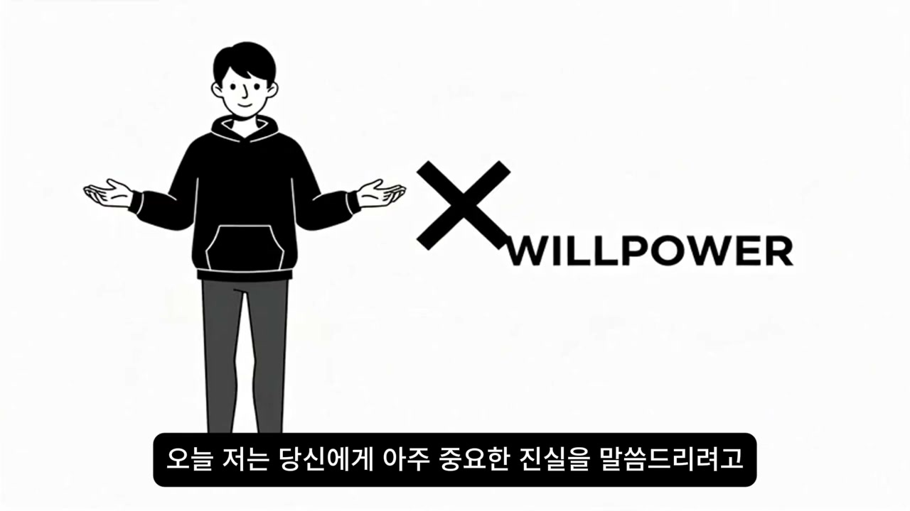
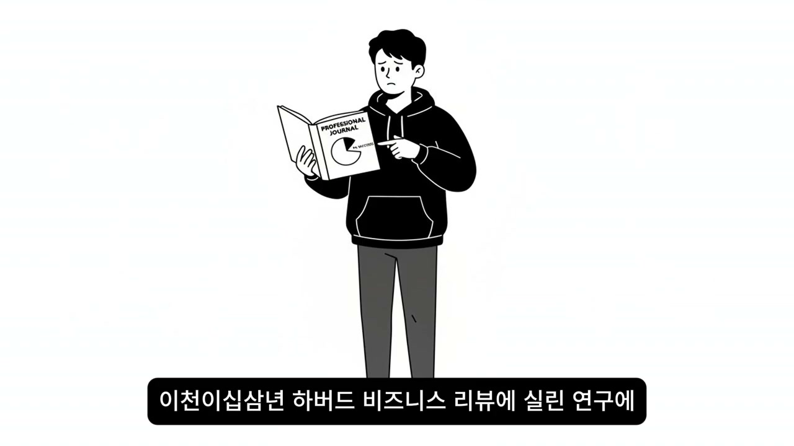
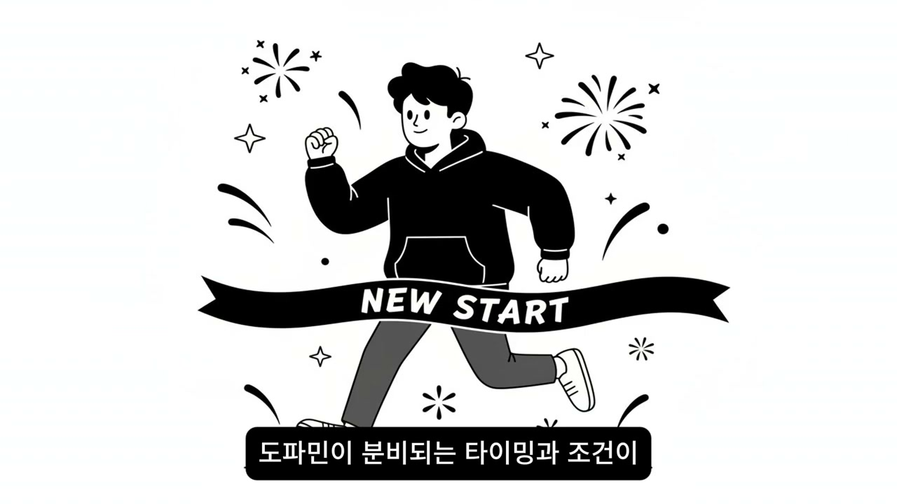
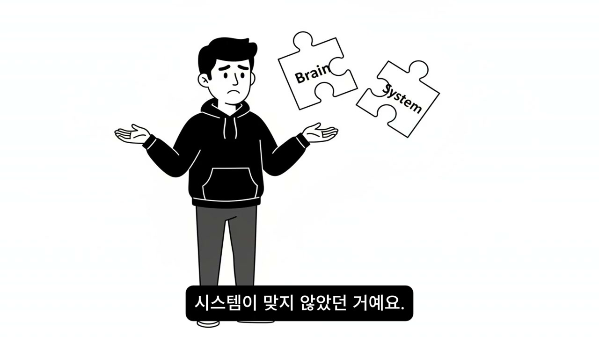
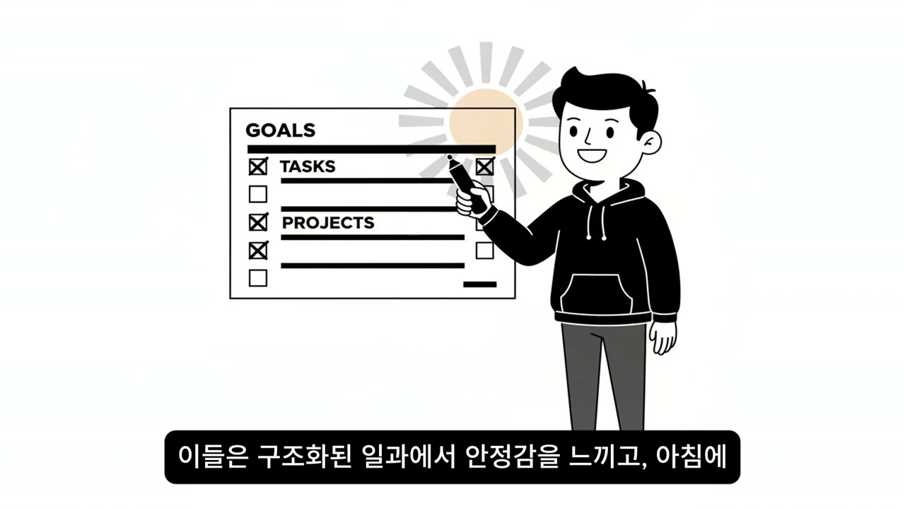
발표자는 “잘 알려진 성공 습관이 왜 나에게만 안 통하는가?”를 유형 궁합 문제로 풉니다. 예시로 아침 5시 루틴은 ESTJ/ENTJ처럼 외향적·계획적 유형엔 보상 구조가 맞을 수 있으나, INFP/INTP처럼 내적 흥미·불규칙 창의 에너지 기반 유형에는 오히려 스트레스 유발 요인이 될 수 있다고 말합니다.
여기서 중요한 건 방법 자체 비난이 아니라 전달함수의 차이입니다. 어떤 유형은 체크리스트 소거에서 도파민이 나오고, 어떤 유형은 의미 연결 또는 새 자극에서 나온다는 구분입니다.
영상은 이 차이를 실험 수치로 밀어붙입니다. 스탠퍼드 행동과학연구소(2024, 영상 제시)에서 내향 직관형 군(INFJ, INFP, INTJ, INTP)에 외향 감각형 방식 적용 시 3주 이탈률 78%, 맞춤 인지기능형 시스템 적용군은 23%로, 3배 이상 차이라고 제시합니다.
이 구간 시각화는 막대(23% DROP OUT, 3X 표기), 연구자료 과부하 이미지(책·영상 창 다중), 인터페이스 카드(전략 설계)로 구성됩니다. “정보를 더 모으는 것”과 “맞는 시스템을 쓰는 것”의 차이를 그림으로 분리해줍니다.
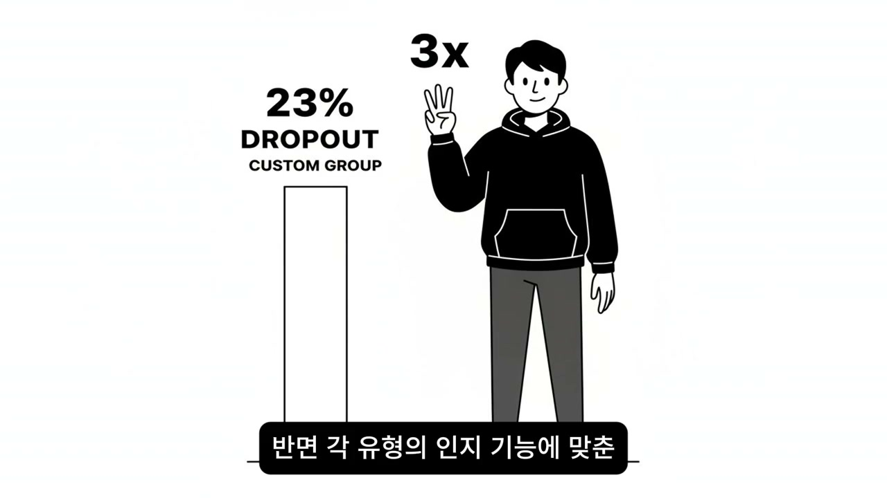
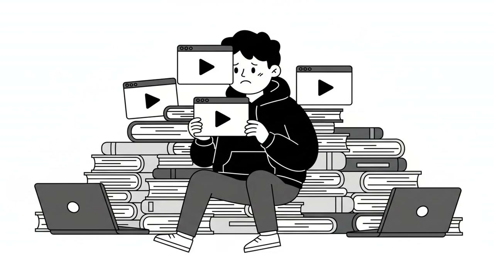
NT 범주는 INTJ/INTP/ENTJ/ENTP로 제시됩니다. 발표자는 NT의 주병목을 분석마비(analysis paralysis) 로 규정하며, “최적해를 찾을 때까지 시작을 미루는 구조”를 설명합니다.
INTJ/INTP는 특히 머릿속 청사진 완성 전 출발을 못하는 경향으로 묘사되고, “유튜브 10개, 책 3권, 블로그 20개를 보고도 아직 준비가 덜 됐다”고 말하는 패턴이 대표 사례로 제시됩니다.
신경과학 설명은 전두엽 과활성-행동 촉발 억제 구조입니다. 전두엽(계획·판단·예측)이 과도하게 작동하면, 행동을 촉발하는 쪽(영상 설명상 편도체)이 억제되어 “생각은 많은데 몸이 안 움직이는 상태”가 된다는 논리입니다.
해결책은 3가지입니다.
첫째, 60% 룰: 완벽 준비가 아니라 60% 준비 시 착수. MIT 슬론(2023, 영상 제시)에서 준비 완성도 60% 이후 성공률 차이가 거의 없고, 과준비군은 시장 변화 대응 실패율이 높았다고 제시합니다.
둘째, 프로토타입 사고: 첫 시도를 최종물 아닌 베타 실험으로 재프레이밍해 심리 장벽을 낮춥니다.
셋째, 역방향 계획법: 최종목표에서 역산해 오늘의 단일 행동으로 축약합니다.
ENTJ/ENTP에 대해서는 별도 병목으로 프로젝트 점핑을 제시합니다. 새 아이디어가 떠오를 때 기존 프로젝트를 버리는 패턴이며, 해결책은 72시간 쿨다운 리스트입니다. 즉시 실행 대신 보류하고 3일 후에도 유효하면 채택하는 규칙입니다.
듀크 의사결정연구소(2025, 영상 제시)에서 ENTP 그룹 완수율이 45%→72%로 상승했다는 수치를 제시합니다.
화면에서는 파이차트/시계, 데이터 카드, 막대 45-72%가 반복되고, Diplomat: NF Types 박스가 등장하는 전환 컷에서 다음 유형군으로 넘어갑니다(내레이션은 NF 4유형 모두 언급).
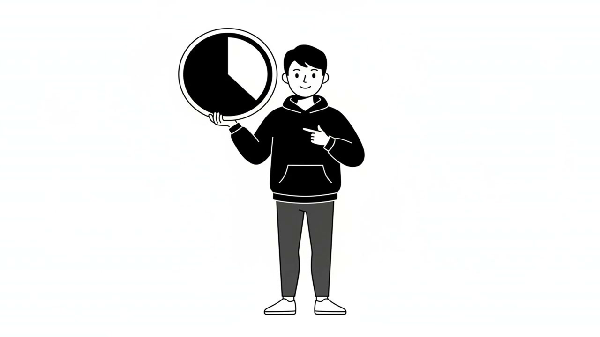
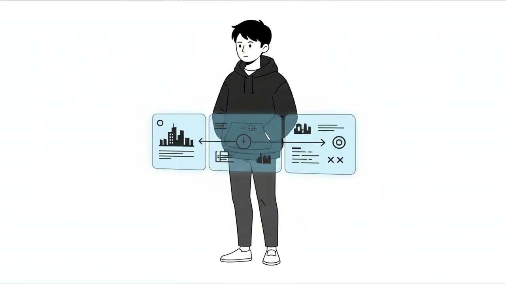
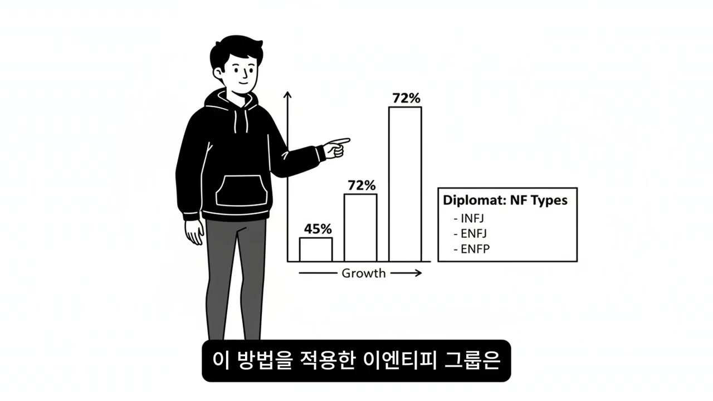
NF 범주는 INFJ/INFP/ENFJ/ENFP로 제시됩니다. 병목은 의미중독입니다. 이 유형은 목표 자체보다 목표가 자신의 가치관과 연결되는지에서 에너지가 발생하며, 연결이 약하면 동력이 급감한다고 설명합니다.
INFP 사례에서 영어공부를 시작하려다 “왜 영어를 해야 하지?”, “사회가 강요하는 건가?” 같은 실존 질문에 빠져 실제 행동(단어장 1페이지)을 못 넘기는 과정을 보여줍니다.
토론토대 동기심리 연구소(2024, 영상 제시) 수치로 NF가 목표의 내재적 의미를 인식할 때 도파민 분비량이 타 유형 대비 2.1배 높았다고 제시합니다. 반대로 승진·돈 같은 외적 압력 목표에는 도파민 반응이 낮아진다고 합니다.
솔루션은 3단계입니다.
첫째, 가치 앵커링: 목표를 핵심가치에 문장으로 연결(예: 영어 = 성장, 세계시민 소통).
둘째, 마이크로 미션: 거대 목표 대신 “좋아하는 영화 대사 한 문장 완전 이해” 같은 의미 단위로 분해.
셋째, 감정일기 3분: 그날 감정 상태/원인을 기록해 실행력과 감정 상태를 동기화.
펜실베이니아대 긍정심리센터(2023, 영상 제시)에서는 감정일기를 쓴 INFP 집단 목표 지속률이 38% 향상되었다고 소개됩니다. ENFJ/ENFP에는 ‘타인 과몰입’ 함정이 추가되며, 자기목표를 타인 도움과 연결하면 오히려 실행력이 오른다고 정리됩니다(예: 영어를 잘해 외국 친구에게 한국 문화를 더 잘 소개).
시각적으로는 물음표 버블(Why? My Life? Future?), 글로벌 네트워크 아이콘, 타인 돕기 장면과 거미줄 낀 GOAL LIST가 의미 탐색 지연/타인 과몰입을 강하게 드러냅니다.
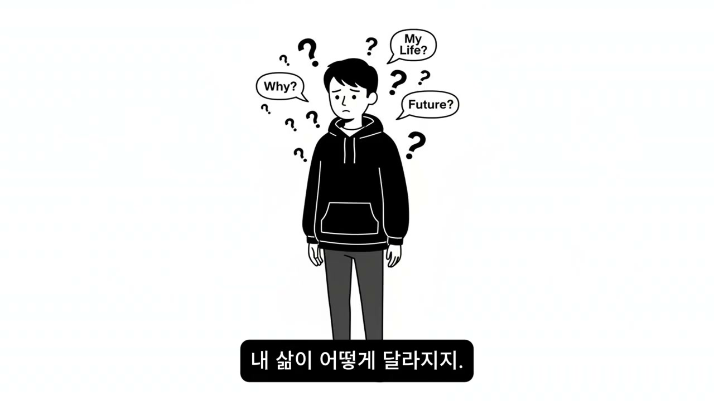
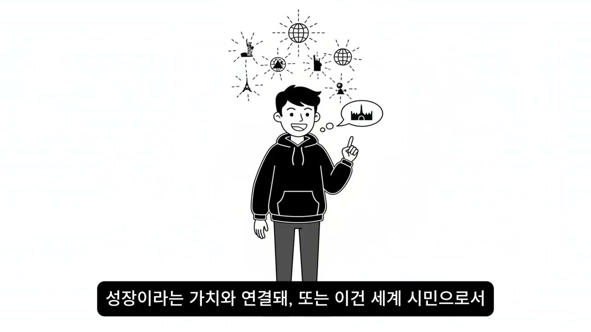
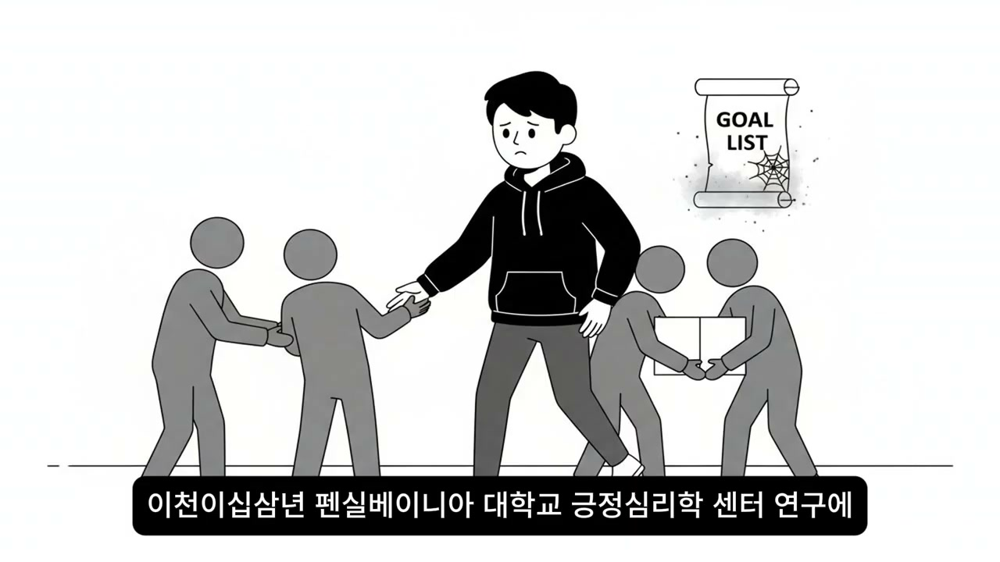
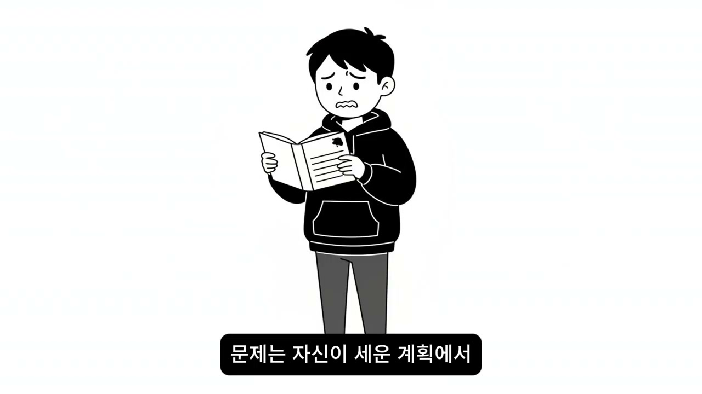
SJ 범주는 ISTJ/ISFJ/ESTJ/ESFJ입니다. 발표자는 SJ의 실행력 자체는 높다고 인정하지만, 병목을 완벽주의적 경직성으로 규정합니다.
ISTJ 사례에서 “아침 6시 운동” 계획을 회식으로 한 번 놓치면, 대체 실행보다 “이미 망했다”는 해석이 먼저 작동해 며칠 공백으로 번지는 패턴을 설명합니다.
이걸 심리학 용어로 all-or-nothing thinking이라 명시합니다. 시카고대 행동경제학(2025, 영상 제시)에 따르면 SJ 목표 이탈 원인 중 63%가 계획 이탈 직후 자기비난 기반 포기였다고 제시됩니다.
솔루션은 3가지입니다.
첫째, 플랜B 사전설계: 메인 플랜 실패 시 즉시 대체 행동(예: 아침운동 실패 → 점심 15분 산책).
둘째, 70% 달성 기준: 주 7회 목표라면 5회도 성공으로 인정.
셋째, 시각 추적기: 달력 X표/연속일수 앱으로 체인 유지 심리를 활용.
코넬대(2024, 영상 제시)에서는 이 방식 적용 SJ 장기 목표 유지율이 2.4배 상승했다고 설명합니다. ISFJ/ESFJ는 타인 기대 과부하가 추가 이슈로, “오후 7~8시는 나와의 약속”처럼 자기목표 시간을 타인 약속과 같은 위상으로 프레이밍하라고 권합니다.
화면은 불안한 표정의 계획 확인, COGNITIVE PATTERN 돋보기, 캘린더 X표, 그리고 세 병목 기둥(Analysis Paralysis / Meaning Addiction / Perfectionist Rigidity)을 통해 중간 종합을 제공합니다.
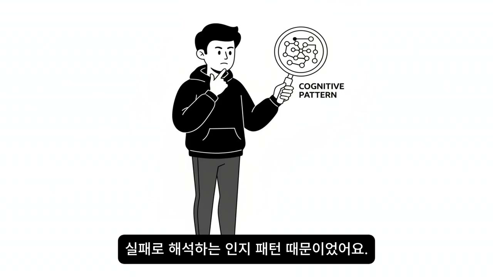
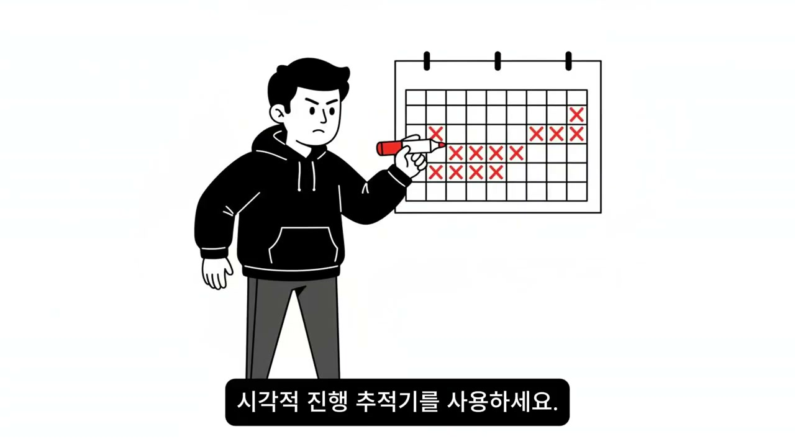
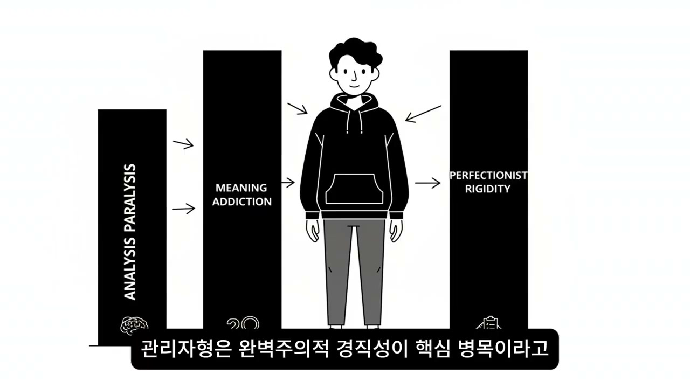
SP 범주는 ISTP/ISFP/ESTP/ESFP입니다. 병목은 자극 의존성으로, 새롭고 흥미로운 것엔 강하지만 익숙해지면 급격히 흥미가 떨어지는 패턴입니다.
영상은 DAY1(불타는 에너지) vs DAY5(기력 저하) 분할 화면으로 체감적 변화를 표현합니다.
뇌과학 설명은 도파민 수용체 민감도와 빠른 내성입니다. 예일대 신경과학(2024, 영상 제시)에서 SP는 동일 활동 반복 시 도파민 분비 감소 속도가 타유형 대비 42% 빠르다고 제시됩니다.
솔루션은 3가지입니다.
첫째, 변주 루틴: 목표는 고정, 방식은 유동(운동 목표면 월 러닝/화 수영/수 홈트 등).
둘째, 게임화 요소: 경쟁·보상 구조(내기, 앱 레벨업). 카네기멜론(2025, 영상 제시)에서 SP 30일 유지율 31%→67% 상승.
셋째, 짧은 스프린트(2주): 1년 목표 대신 2주 몰입→재평가 루프.
ISFP/ESFP에는 감정기반 실행 편차가 크므로 “기분과 무관하게 5분 최소 실행” 규칙을 제시합니다. 5분 후 멈춰도 되지만, 시작만으로 지속 확률이 오른다는 행동점화 원리입니다.
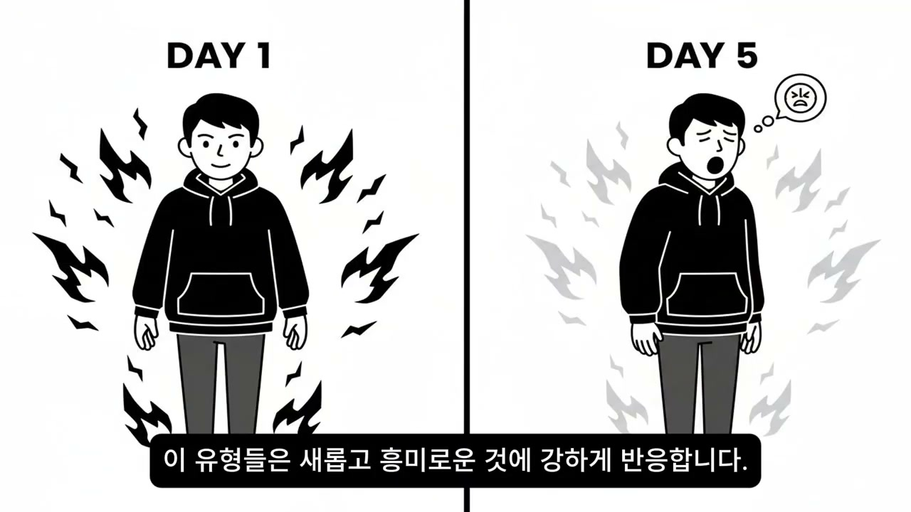
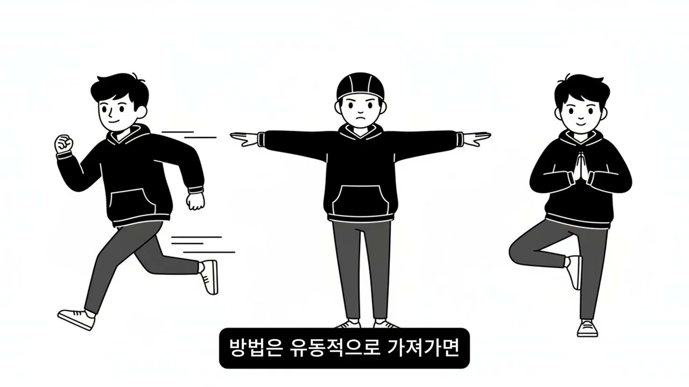
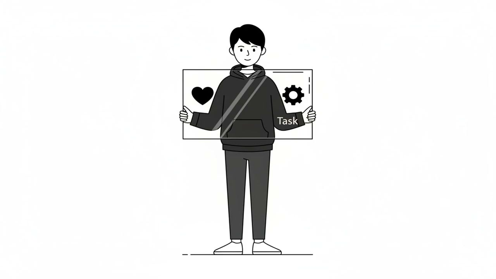
발표자는 유형별 처방만으로는 부족하다고 말하고, 장기 자동화를 만드는 상위전략으로 넘어갑니다. 런던대 습관연구소(2025, 영상 제시)에서 2,000명 추적 결과, 습관 자동화 평균 66일이지만 개인차가 18~254일로 매우 컸다고 제시합니다.
이 차이를 설명한 결정요인은 의지력·성격보다 환경 설계였다고 주장합니다.
핵심 개념은 Choice Architecture입니다. 매 순간 의지력을 소모해 선택하지 말고, 올바른 선택이 자동으로 일어나게 환경을 사전 세팅하라는 것입니다.
예시가 매우 구체적입니다.
아침운동을 원하면 전날 운동복을 침대 옆에 둔다.
유튜브 대신 독서를 원하면 소파 옆엔 책, 리모컨은 깊은 서랍에 둔다.
이는 마찰비용 원리로 정리됩니다. 좋은 행동의 마찰은 낮추고, 나쁜 행동의 마찰은 높입니다.
와튼스쿨(펜실베이니아대, 2024, 영상 제시)에서는 마찰비용 전략 조정군이 비조정군 대비 습관 형성 성공률 3.2배였고, 의지력 훈련군보다도 효과가 컸다고 제시됩니다.
다만 발표자는 “환경 설계만으로 충분하지 않다”며 다음 단계(정체성 전환)로 연결합니다.
시각적으로 London U. Habit Lab 2025, 무거운 WILLPOWER 상자 vs 설계도, GOOD HABIT/BAD HABIT 대비 그래프가 이 논리를 압축해 보여줍니다.
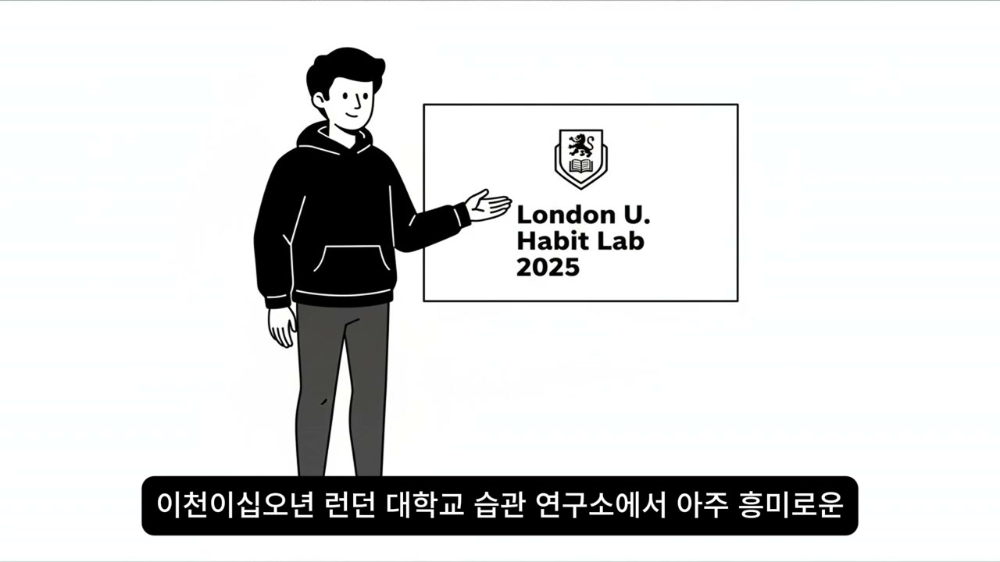
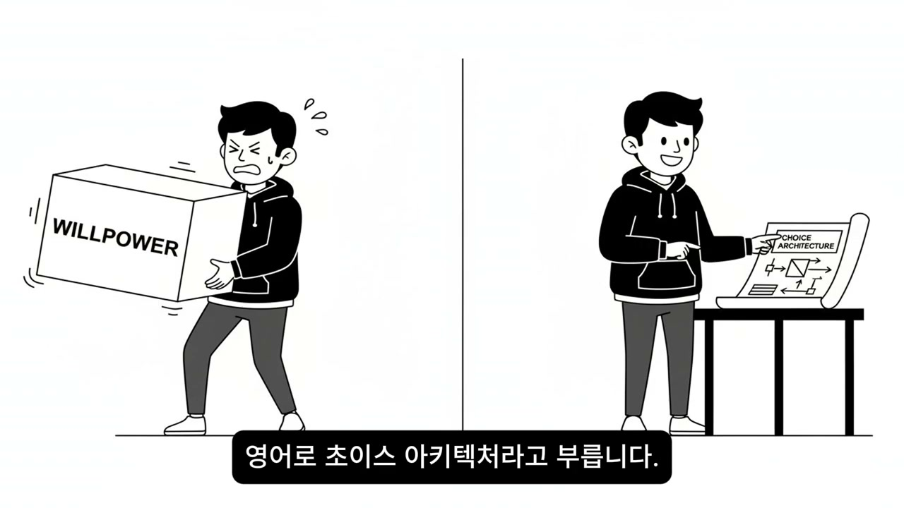
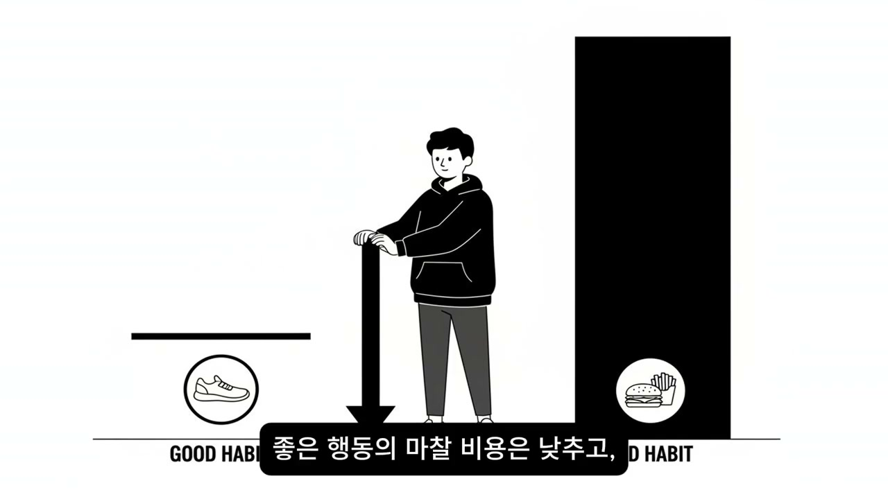
발표자는 마지막 퍼즐로 정체성 중심 목표를 제시합니다. 행동 중심 목표(살 빼야지, 책 더 읽어야지, 영어 잘해야지)는 외부 결과에 의존해 중간 좌절 시 붕괴하기 쉽다고 봅니다.
반면 정체성 중심 목표는 “나는 건강을 중시하는 사람”, “나는 평생 학습자”, “나는 글로벌 커뮤니케이터”처럼 자기 규정이 먼저이고, 행동은 그 정체성을 증명하는 증거가 됩니다.
인지부조화 해소 메커니즘을 동력으로 사용합니다. “운동하는 사람” 정체성을 채택하면, 운동을 안 한 상태가 심리적으로 불편해져 행동 일치 쪽으로 복귀하기 쉽다는 설명입니다.
스탠퍼드 정체성 연구소(2025, 영상 제시) 실험 수치로 6개월 유지율이 행동중심 목표군 23%, 정체성 중심 목표군 61%라고 제시됩니다.
실행법은 3단계입니다.
첫째, 되고 싶은 사람을 구체적으로 정의: “성공한 사람” 같은 추상어가 아니라 “매일 아침 자기개발 1시간 투자하는 사람”, “어려운 상황에서도 침착하게 문제 해결하는 사람”.
둘째, 그 사람이 할 작은 행동을 매일 수행: 평생학습자라면 하루 10분 독서. 핵심은 결과 크기가 아니라 정체성 증거의 누적.
셋째, 자기대화 변경: “운동해야 하는데”→“나는 운동하는 사람”, “책 읽어야 하는데”→“나는 독서가”. 영상은 이를 Self-Perception 변화로 시각화합니다.
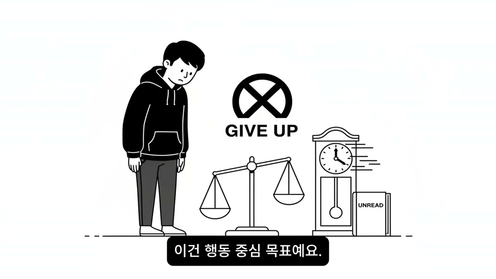
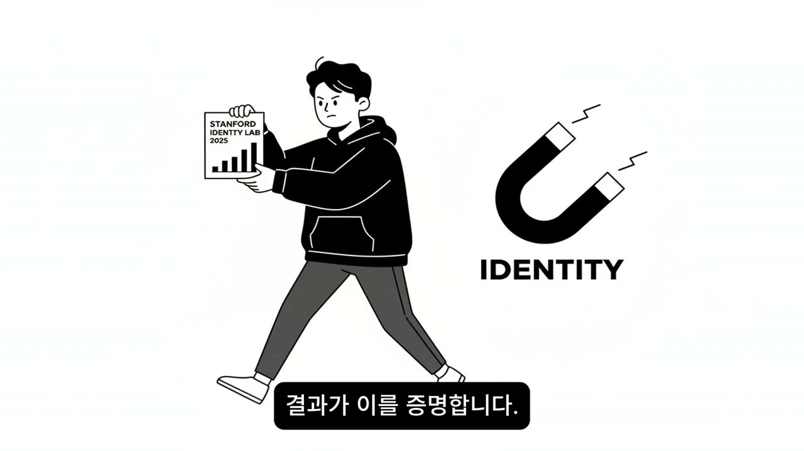
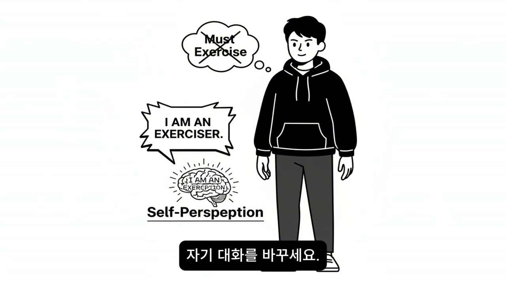
최종 정리는 3축입니다.
첫째, MBTI 맞춤 실행 시스템 선택.
둘째, 환경 설계(좋은 행동 마찰↓, 나쁜 행동 마찰↑).
셋째, 행동보다 정체성에 초점.
동시에 발표자는 역설적 실패를 경고합니다. 이 모든 방법을 한꺼번에 적용하면 다시 분석마비·의미탐색 과몰입·완벽주의 포기·자극소진으로 돌아갈 수 있다는 것입니다.
그래서 마지막 제안은 단순합니다. 오늘 밤 하나만 고르고, 내일부터 적용. 하나가 익숙해지면 다음 하나를 추가합니다.
영국 행동변화연구소(2023, 영상 제시) 장기추적 수치로 다중 동시변화 그룹은 1년 유지율 8%, 한 번에 하나씩 바꾼 그룹은 64%로 제시됩니다.
영상은 시청 지속 자체도 행동 신호로 해석합니다. “끝까지 본 당신은 이미 90%보다 앞서 있다”고 강화하고, 채널 포지셔닝을 “데이터로 증명하고 심리로 해결하는 성장전략”으로 규정합니다.
최종 슬로건은 “시작이 아닌 완주, 열정이 아닌 시스템”입니다.
시각적으로 Multitasking Group: 8% vs One-by-One Group: 64%, IRONIC FAILURE 스탬프, ACTION/Like/Subscribe 요소가 마무리 구조를 명확히 만듭니다.
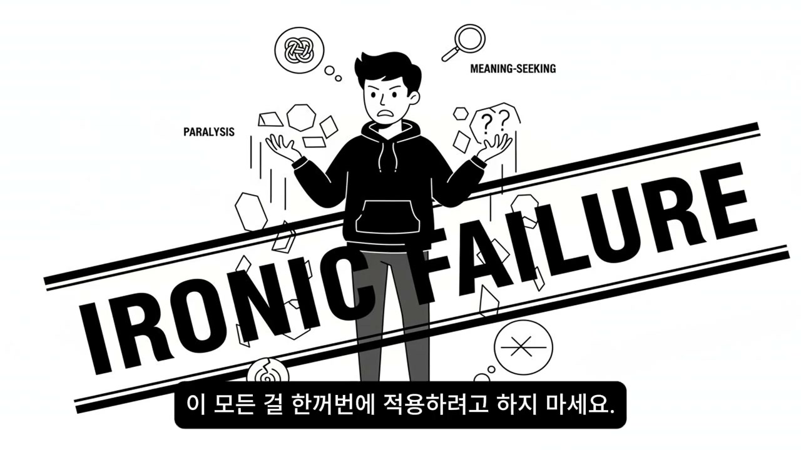
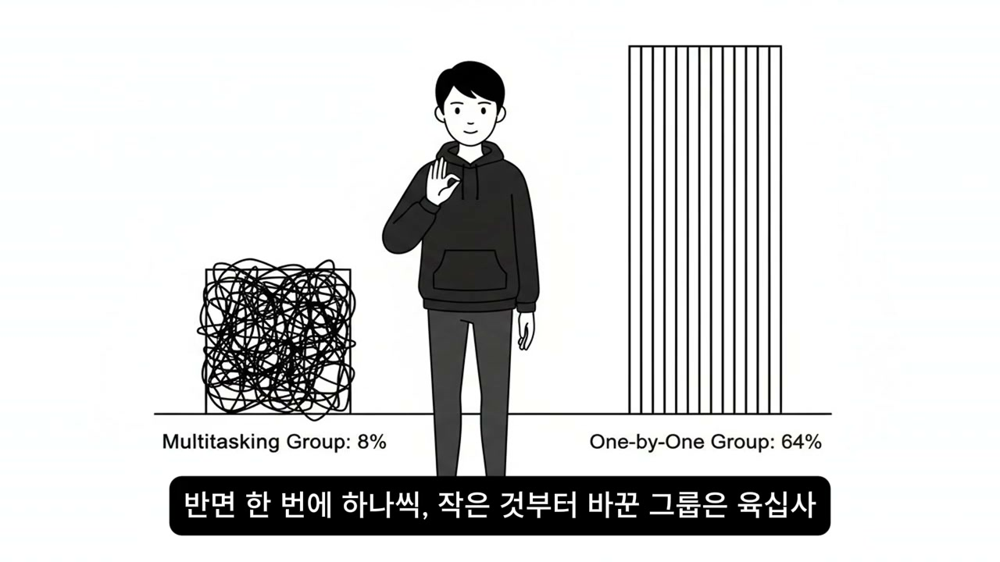
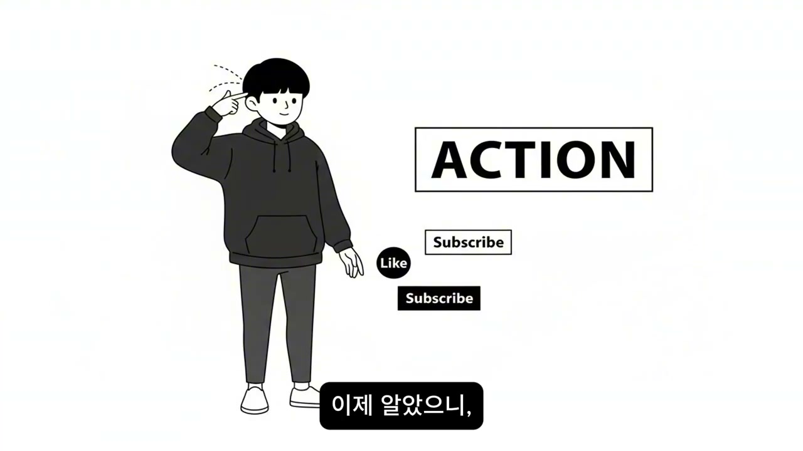
“당신이 실행을 못하는 이유는 의지력 부족이 아닙니다.”
“문제는 방법 자체가 아니라 그 방법과 당신의 궁합이었어요.”
“왼손잡이에게 오른손으로 글씨 쓰라고 강요한 것과 같습니다.”
“완벽한 준비를 기다리지 말고 60%면 일단 시작하세요.”
“첫 시도는 최종 결과물이 아니라 베타 버전입니다.”
“외교관형의 가장 큰 병목은 의미 중독입니다.”
“관리자형의 핵심 병목은 완벽주의적 경직성입니다.”
“탐험가형의 병목은 자극 의존성입니다.”
“의지력보다 더 결정적인 요인은 환경 설계였습니다.”
“행동이 아닌 정체성에 초점을 맞추세요.”
“오늘 밤 딱 한 가지만 선택하세요.”
“시작이 아닌 완주로, 열정이 아닌 시스템으로.”
이 영상의 실전 메시지는 단순합니다. 실행 실패를 도덕적 결함(의지 박약)으로 해석하면 해결이 막히고, 실행을 신경보상-환경-정체성의 설계 문제로 보면 개선 경로가 열린다는 것입니다.
실용적으로는 다음 3단계를 권합니다.
1) 내 병목 유형을 먼저 정의한다(NT 분석마비 / NF 의미중독 / SJ 경직성 / SP 자극의존).
2) 내 유형에 맞는 최소 규칙 하나만 적용한다(예: 60% 착수, 72시간 보류, 70% 성공기준, 5분 최소실행 등).
3) 환경과 정체성 문장을 동시에 조정한다(마찰 설계 + “나는 ~하는 사람” 자기대화).
영상이 끝까지 밀어붙이는 결론은 “동기의 세기”가 아니라 “시스템의 적합도”입니다. 결국 성장은 한 번의 거대한 결심보다, 뇌에 맞는 작은 설계를 반복해 완주 확률을 높이는 공학적 과정이라는 점을 일관되게 강조합니다.
댓글
GitHub 이슈 기반 댓글 시스템입니다.